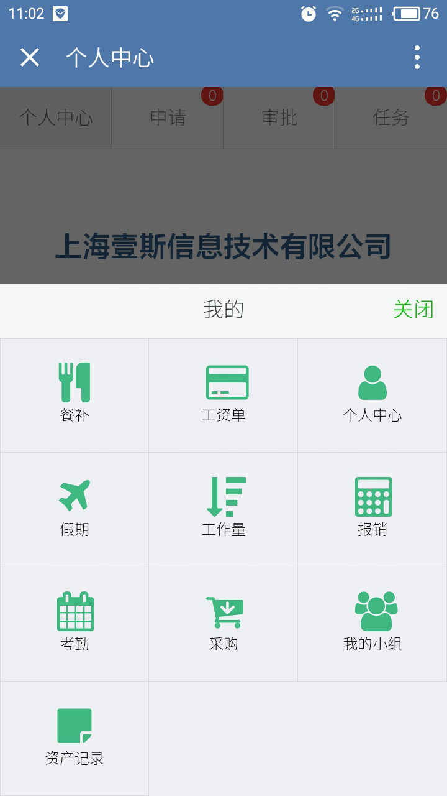
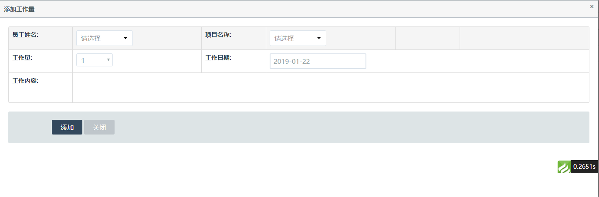
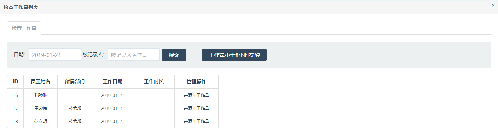
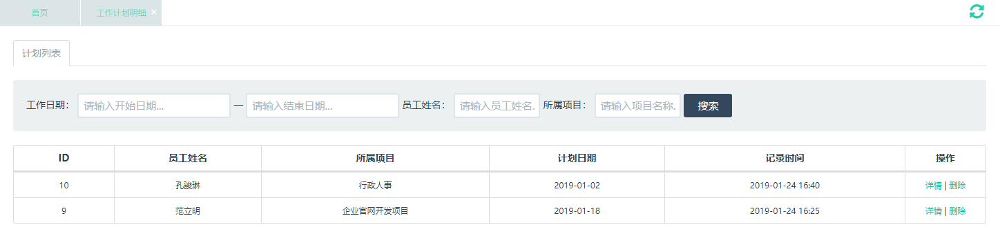
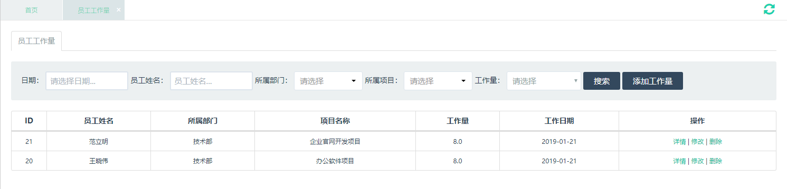
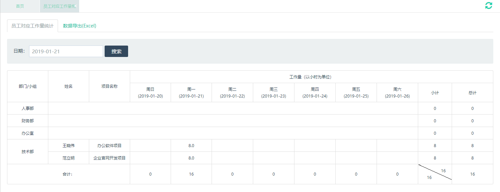
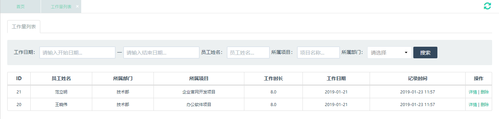
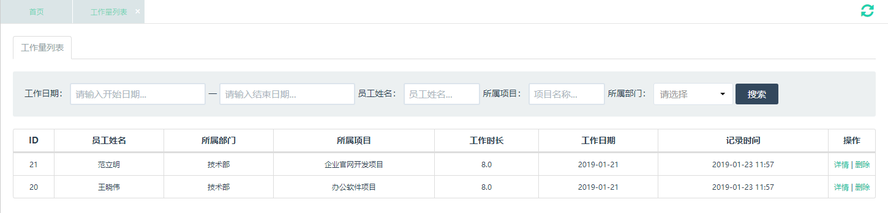
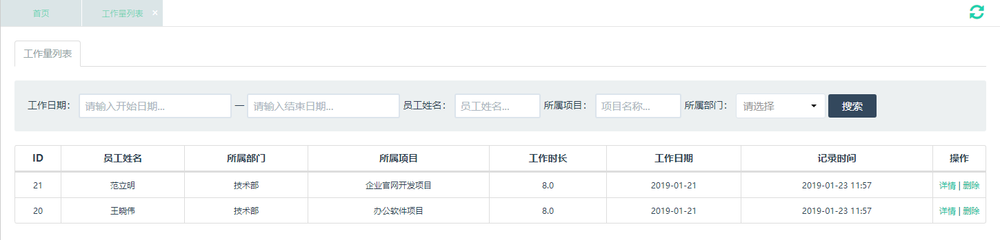

工作计划及工作量
添加工作计划
1.1【移动端】选择【发起-记工作量】，【报计划】选择计划日期及项目名称并填写工作内容，填写完成点击【提交计划】。

添加工作量
2.1【移动端】选择【发起-记工作量】，【记工作量】选择项目名称、工作日期及工作时长并填写工作内容，填写完成点击【提交工作量】。
2.2【后台】选择左侧【考勤管理-员工工作量】，【添加工作量】填写完成点击【添加】。

工作计划及工作量填写提醒
3.1【后台】选择左侧【考勤管理-当天考勤】菜单，选择日期及被记录人姓名进行查看。【检查计划】检查工作计划，【提醒添加计划】对未添加计划的人员进行提醒。

3.2【后台】选择左侧【考勤管理-当天考勤】菜单，选择日期及被记录人姓名进行查看。【检查工作量】检查工作量，【工作量小于8小时提醒】对未添加工作量的人员进行提醒。

查看工作计划及工作量
4.1【后台】选择左侧【项目管理-工作计划明细】菜单，选择日期、员工姓名、及所属项目进行查看。
 4.2【后台】选择左侧【考勤管理-员工工作量】菜单，选择日期、员工姓名、所属部门、所属项目及工作量进行查看。
 4.3【后台】选择左侧【项目管理-员工对应工作量统计】菜单，选择日期进行查看。
 4.4【后台】选择左侧【项目管理-项目对应工作量统计】菜单，选择日期进行查看。
 4.5【后台】选择左侧【项目管理-工作量列表】菜单，选择工作日期、员工姓名、所属项目及所属部门进行查看。

4.5【后台】选择左侧【项目管理-工作量列表】菜单，选择工作日期、员工姓名、所属项目及所属部门进行查看。

4.5【后台】选择左侧【项目管理-工作量列表】菜单，选择工作日期、员工姓名、所属项目及所属部门进行查看。
